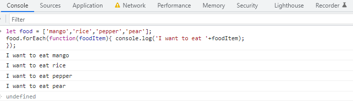
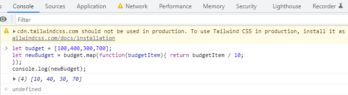
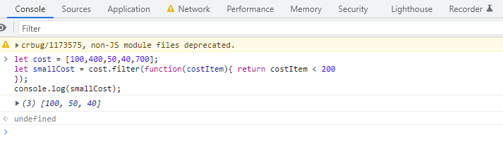
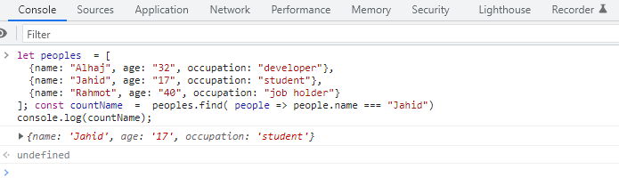

.forEach(), is used to execute the same code on every element in an array but does not change the array and it returns undefined.
Example: ..forEach() to iterate over an array of food and log that we would want to eat each of them
.map() executes the same code on every element in an array and returns a new array with the updated elements.
Example: .map() to iterate over the elements of the Budget array and divide each element by 10, then assign our new array containing the new Budget to the variable Budget.
.filter() checks every element in an array to see if it meets a certain criteria and returns a new array with the elements that return truthy for the criteria.
Example: .filter()In the example below we would use .filter to return values that are less than 200.
.find() checks every element find in a object to see if it meets a certain criteria and returns a property of the name or value with the elements that return truthy for the criteria.
Example: .find()In the example below we would use .find() returns the descendants of the selected elements that match the selector.
Local Storage
1.The client can only read local storage
2.There is no transfer of data to the server
3.There are fewer old browsers that support it
4.As it is not session-based, it must be deleted via javascript or manually
Session Storage
1.It's Browser The client can only read Session storage
2.There is no transfer of data to the server
3.There are fewer old browsers that support it
4.It's offline can't read online
Cookies
1.Both clients and servers can read and write the cookies
2.Data transfer to the server is exist
3.It is supported by all the browser including older browser
4.Cookies expire based on the setting and working per tab and window
The event loop is the secret behind JavaScript’s asynchronous programming. JS executes all operations on a single thread, but using a few smart data structures, it gives us the illusion of multi-threading.
Event loops are used in many different types of applications, such as graphical user interfaces, network servers, and web applications. They provide a flexible and efficient way to manage asynchronous events and ensure that the program responds quickly and efficiently to user input and other events.